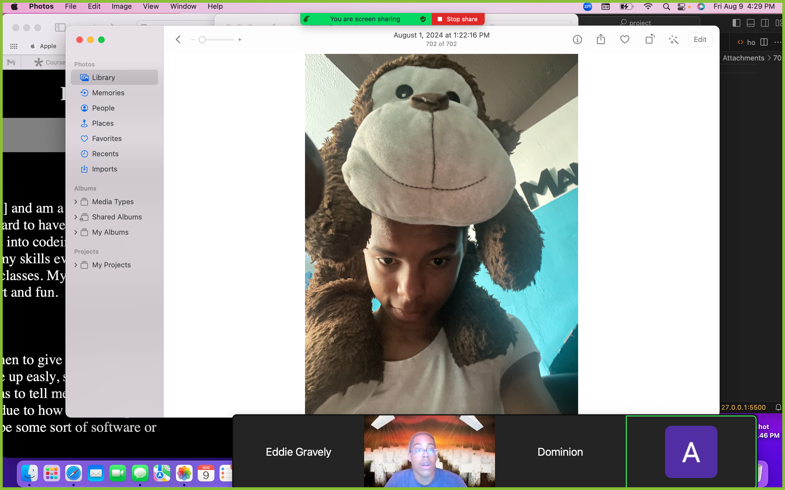

My name is Eddie gravely I live in [blank] and am a softmore. I am a new member of All Star Code, working hard to have a possible futuer in the software engenering department. I got into codeing at a young age around seven and have been building up my skills ever since. I currently atend Darrow School and am in advance classes. My personality has been described as determend, funny, smart and fun.
However I have been told I dont know when to give up or take a break when doing chalenging things. I dont give up easly, so I will keep trying over and over again intill someone else has to tell me to stop and take a break. My best form of coding is HTML due to how well and speed at wich I can do it. My dream job would to be some sort of software or rocket science engener.
